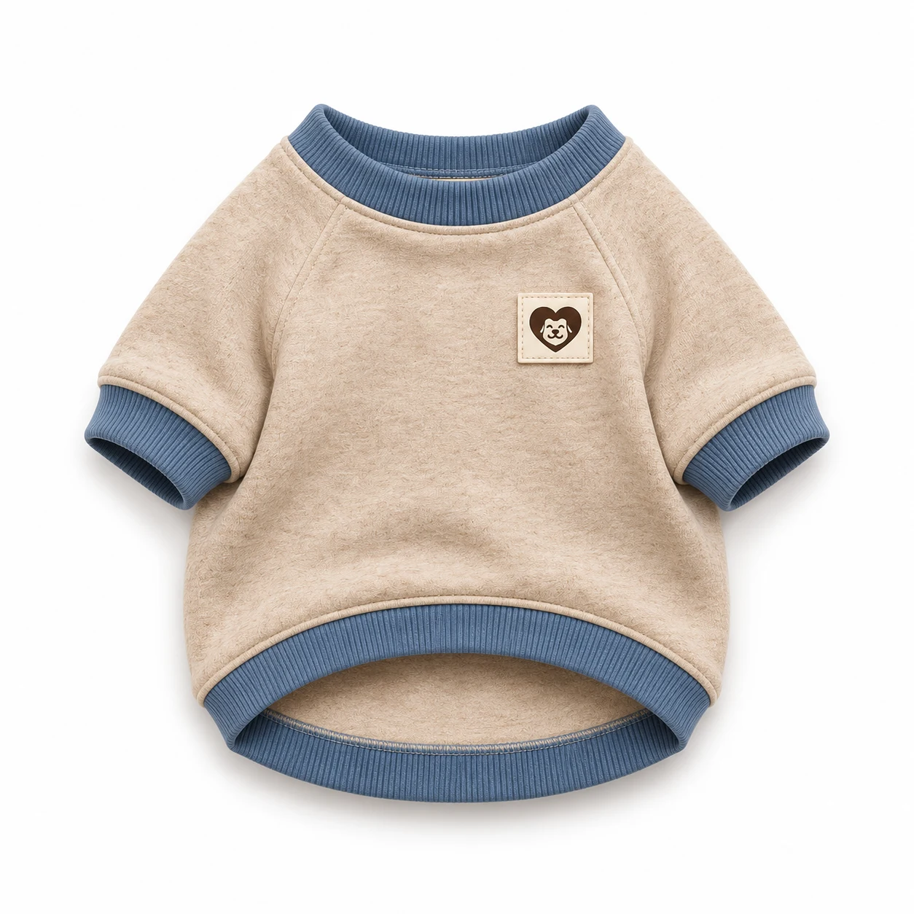
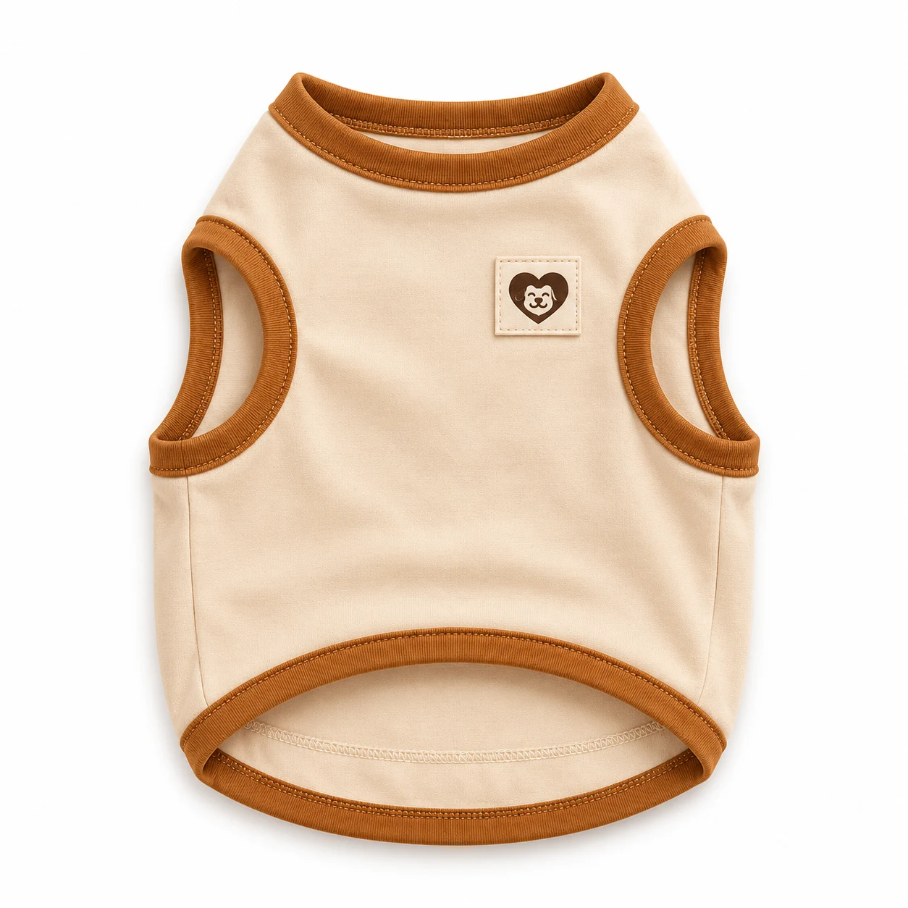

Design conceptEveryday Light Sweatshirt
An oatmeal sweatshirt concept with dusty blue ribbed details and a clean, relaxed look.
View designTHE DETAILS BEHIND PETSLOVE
A closer look at the shapes, colors, and details behind the collection.

01 / SHAPE & FIT
Our design direction considers the shape of the body, the placement of openings, and the balance between coverage and movement.
Different pets have different proportions. Sample reviews and fit adjustments are part of the path from an initial silhouette to a final product.
02 / THE COLOR STORY
Cream brings softness. Caramel adds warmth.
Dusty blue offers a quiet contrast.
03 / TEXTURE & CHARACTER

Design conceptAn oatmeal sweatshirt concept with dusty blue ribbed details and a clean, relaxed look.
View design Design concept
Design conceptA caramel cable-knit concept with contrasting cream collar, cuffs, and hem.
View design Design concept
Design conceptA cream pet bandana and coordinating scrunchie, finished with a small caramel heart pattern.
View designFinal fabric composition and care instructions will be confirmed during product development.
04 / OUR LITTLE SIGNATURE
Our heart-and-dog emblem brings the petslove idea into one simple mark. Placed as a small detail, it connects each piece to the collection.
FROM CONCEPT TO COLLECTION
Shapes, colors, and the story of a collection.
Translate the concept into construction details.
Review proportions and refine the details.
Confirm measurements and product information.
Our first collection is in development. Images show design concepts, not finished products.
A LITTLE CONNECTION GOES A LONG WAY
Questions, ideas, or something we could create together?